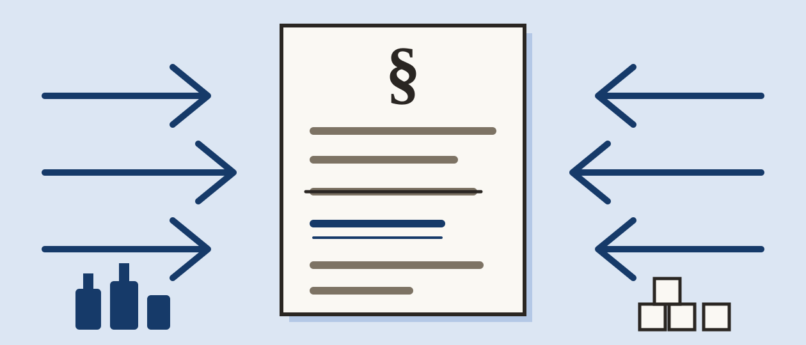

M2 · nach der Klassenarbeit · 90 Minuten
Verbände und Lobbyismus
Stimme der Gesellschaft – oder gekaufte Politik?

Darum geht es
Ein Fall zieht sich durch: die Zuckersteuer 2026 – ein Gesetz unter Druck. Eine Doppelstunde, sieben Schritte.
So arbeitest du mit diesem Blatt
- Links stehen alle Arbeitsaufträge. Du siehst immer, wo du bist und was noch kommt.
- Jeder Auftrag ist ein Blatt. Du scrollst von oben nach unten.
- Manche Aufträge öffnen nach deiner Antwort, manche auf Ansage deiner Lehrkraft.
- Oben rechts sicherst du deinen Stand als Datei. So geht nichts verloren, auch wenn du das Gerät wechselst.
So läuft dieses Blatt
Diese Seite spitzt zu. Die Beispiele sollen stören und Fragen auslösen. Jede Position steht mit Quelle und Datum da, und auf jede Seite folgt die Gegenseite. Ob Lobbyismus die Demokratie stärkt oder schwächt, entscheidest du – mit Gründen.
Seit 2022 müssen sich Interessenvertreterinnen und -vertreter beim Bundestag eintragen. Schätze, bevor du aufdeckst.
Wo stehst du – jetzt, vor dem Fall?
Lobbyismus in Deutschland ist …
Großbritannien besteuert zuckrige Getränke seit 2018. Deutschland setzt seit 2018 auf freiwillige Zuckerreduktion. 2026 will die Bundesregierung eine Steuer auf Limonade, Cola, Eistee und Energydrinks einführen. Zwischen April und November ändert sich der Plan fünfmal. Schiebe durch die Fassungen. Gestrichenes ist durchgestrichen, Neues unterstrichen. Bevor du den Hintergrund liest, tippst du, wer ein Interesse an der Änderung hatte.
Plenum (3 Minuten): Wer hat die dritte Stufe gestrichen? Warum kann das niemand genau sagen? Was müsste öffentlich sein, damit man es wüsste?
Und seitdem? Den Fall weiterverfolgen
Stand dieser Seite: 10. November 2026. Laut Presseberichten sollte der Bundestag bis Ende November entscheiden. Recherchiere, was seitdem passiert ist, und trage es ein – mit Datum und Quelle.
Sechs Akteure versuchen, die Zuckersteuer zu formen. Nicht alle sind Lobby: Manche sitzen selbst in Regierung oder Parlament. Lies deinen Akteur, wähle seine stärksten Machtressourcen und hol dir die Rückmeldung. Notiere für den Bericht: Akteur · Interesse · Ressource · Zugang.
Hilfe: Was ist eine Machtressource?
Alles, womit ein Akteur andere dazu bringen kann, seine Interessen zu berücksichtigen: Geld, Wissen, viele Mitglieder (Wählerstimmen), Drohpotenzial (»dann schließen Betriebe«), gute Kontakte, Druck über die Öffentlichkeit – oder ein Amt, mit dem man selbst mitentscheidet.
Die Paare berichten in je 30 Sekunden. Dann schätzt die Klasse per Handzeichen (0 bis 4 Finger) den Einfluss jedes Akteurs auf die Fassung vom 14. Oktober. Die Lehrkraft stellt den Mittelwert ein.
Plenum: Woran habt ihr Einfluss gemessen – an der Lautstärke, an Geld, am Amt? Wer am lautesten ist, hat nicht unbedingt am meisten bewegt. Und was sehen wir gar nicht: Gespräche, über die es kein Protokoll gibt.
Bevor du urteilst: Verbände sind kein Fremdkörper. Das Grundgesetz schützt sie (Art. 9 Abs. 1: Vereinigungsfreiheit). Ordne zu, welche Aufgabe ein Verband in jedem Satz erfüllt.
Zwei Sichtweisen
Pluralismus
Viele Gruppen vertreten offen ihre Interessen, keine setzt sich allein durch. Aus dem Wettstreit und dem Kompromiss entsteht das Gemeinwohl – so der Politikwissenschaftler Ernst Fraenkel. Lobbyismus gehört dann zur Demokratie.
Die Kritik
Nicht alle Interessen lassen sich gleich gut organisieren. Wenige Unternehmen mit viel Geld finden leichter zusammen als Millionen Verbraucherinnen und Verbraucher – so der Ökonom Mancur Olson. Wer ist die Lobby der Kinder?
Grauzonen: normal oder problematisch?
Lies einen Fall. Prüfe ihn mit drei Fragen: Ist es transparent? Haben alle gleichen Zugang? Bleibt die Politik unabhängig?
Die Ministerin und der Konzern (2019)
Am 5. Juni 2019 veröffentlichte das Bundesernährungsministerium ein Video: Ministerin Julia Klöckner (CDU) neben dem Deutschland-Chef von Nestlé, der die Zuckerreduktion des Konzerns lobt. Kritiker sprachen von einem »Werbevideo«. Das Ministerium antwortete: »Politik heißt, im Gespräch zu bleiben.«
Quelle: Deutsches Ärzteblatt, 05.06.2019.
Die Ampel, die nicht kam (2010)
Am 16. Juni 2010 lehnte das Europäische Parlament eine verpflichtende Farb-Ampel für Zucker, Fett und Salz ab. foodwatch sprach von einer Entscheidung »unter dem Einfluss der Industrielobby«; die Organisation Corporate Europe Observatory schätzte die Ausgaben der Industrie auf über eine Milliarde Euro. Die Gegenseite: Die Deutsche Gesellschaft für Ernährung hielt die Ampel für wissenschaftlich nicht begründet. Seit November 2020 gibt es in Deutschland den freiwilligen Nutri-Score.
Quellen: evangelisch.de, 16.06.2010; foodwatch, 24.11.2022 (Interessenorganisation).
Die Drehtür (Satire, 2022)
Das ZDF Magazin Royale mit Jan Böhmermann verfolgte am 30. September 2022 gemeinsam mit der Zeit und abgeordnetenwatch, wohin Bundestagsabgeordnete nach dem Ende ihres Mandats gegangen sind – auch in die Lobbyarbeit. Dazu gab es ein »Lobby-Memory«. Satire spitzt zu und ist keine neutrale Quelle – sie zeigt aber, was viele stört: Wer gestern Gesetze schrieb, kann heute für die arbeiten, die von ihnen betroffen sind.
Quelle: turi2, 30.09.2022.
Im Raum: Stellt euch auf eine Linie quer durchs Zimmer – links »Stimme der Gesellschaft«, rechts »gekaufte Politik«. Zwei von jeder Seite begründen mit einem Beleg aus dem Fall. Dann darf jede und jeder die Stelle wechseln.
Danach auf dem Gerät:
Sachurteil
Wie stark haben Verbände die Zuckersteuer bis zum 5. November verändert? Stütze dich auf Belege aus Schritt 2 und 3 – und benenne, was sich nicht belegen lässt.
Werturteil
Soll der Bundestag die Zuckersteuer beschließen? Entscheide nach deinen Werten – Gesundheit, Freiheit, Gerechtigkeit für Haushalte mit wenig Geld – und nenne das stärkste Gegenargument.
Satzbausteine
- Sachurteil: »Belegt ist, dass … gefordert hat … Die Fassung vom 14.10. enthält … Ob das auf … zurückgeht, lässt sich nicht belegen, weil …«
- Werturteil: »Mir ist … wichtiger als …, deshalb … Das stärkste Gegenargument ist … Es überzeugt mich nicht, weil …«
Und was folgt daraus?
Wenn dich der Fall stört – oder wenn du findest, dass hier alles normal lief –, kannst du selbst etwas tun:
- Selbst nachsehen: Im Lobbyregister des Bundestags stehen Einträge, Ausgaben und eingereichte Stellungnahmen zu Gesetzesvorhaben – such nach »Zucker«.
- Fragen: Über abgeordnetenwatch.de kann man Abgeordneten öffentlich Fragen stellen – etwa denen aus dem Wahlkreis 260 Böblingen, wie sie zur Zuckersteuer abstimmen und mit wem sie gesprochen haben.
- Regeln vorschlagen: Diskutiert Reformideen: ein »legislativer Fußabdruck« (jedes Gesetz nennt, wer daran mitgeschrieben hat), längere Wartezeiten vor dem Wechsel in die Lobbyarbeit – und was dagegen spricht.
- Verband
- Freiwilliger Zusammenschluss von Menschen oder Organisationen mit gemeinsamen Interessen, der auf Politik einwirken will (z. B. Bauernverband, Ärztekammer).
- Lobbyismus
- Versuch, Entscheidungen von Regierung und Parlament im Sinne bestimmter Interessen zu beeinflussen – durch Gespräche, Stellungnahmen, Kampagnen.
- Machtressourcen
- Mittel, mit denen Akteure Einfluss nehmen: Geld, Wissen, Mitglieder, Drohpotenzial (Konfliktfähigkeit), Zugang, Öffentlichkeit.
- Pluralismus
- Vorstellung, dass viele Interessen offen miteinander konkurrieren und das Gemeinwohl aus Kompromissen entsteht (Fraenkel).
- Lobbyregister
- Öffentliches Verzeichnis beim Bundestag seit 2022, seit März 2024 auch mit Zielen und Stellungnahmen; Verstöße kosten Bußgeld.
- Drehtür
- Wechsel von Politikerinnen und Politikern in die Lobbyarbeit und umgekehrt.
Ohne Gerät: drei Fragen
- Nenne drei Machtressourcen und je einen Akteur aus dem Fall, der sie nutzt.
- Warum ist ein Ministerium, das einen Entwurf schreibt, auch ein Akteur mit Interessen?
- Was lässt sich über den Einfluss der Verbände auf die Zuckersteuer belegen – und was nicht?
Antworten zum Vergleichen
- Zum Beispiel: Öffentlichkeit – Kampagne der acht Verbände; Fachwissen – Diabetes-Gesellschaft; Amt – Finanzministerium oder Unions-Agrarpolitiker.
- Es formuliert den Text und verfolgt eigene Ziele, hier Einnahmen für den Haushalt.
- Belegt: wer wann was gefordert hat und wie sich die Fassungen geändert haben. Nicht belegt: wer welche Änderung durchgesetzt hat – es gibt kein öffentliches Änderungsprotokoll.
Klausurtraining
Aufgabe (analysieren, AFB II): Analysieren Sie am Beispiel der Zuckersteuer, wie Verbände auf ein Gesetzgebungsverfahren Einfluss nehmen. Berücksichtigen Sie Akteure, Interessen und Machtressourcen.
Erwartungshorizont (nach dem Schreiben öffnen)
- Einleitung: Fall und Stand benennen (Kabinettsentwurf 14.10.2026, Bundestag offen).
- Mindestens drei Akteure mit Interesse und Position: z. B. Getränke- und Lebensmittelverbände (Kosten, Absatz – dagegen), Bauernverband und Zuckerwirtschaft (Rübenabsatz – dagegen), Ärzte- und Gesundheitsverbände (Gesundheitsschutz – dafür).
- Machtressourcen zuordnen und belegen: Öffentlichkeit (Kampagne), Drohpotenzial (Zuckerfabrik, Preise), Fachwissen (Studien), Mitglieder.
- Einflusswege: offene Briefe, Kampagnen, Stellungnahmen, Kontakte über Parteien und Länder.
- Unterscheidung: Verbände wirken von außen; Ministerium, Länderminister und Abgeordnete entscheiden selbst mit.
- Grenze der Analyse: Änderungen der Fassungen (drei → zwei Stufen, mehr Ausnahmen) lassen sich zeitlich zuordnen, ihr Urheber aber nicht belegen.
Modul 2 · Stand des Falls: 10. November 2026
1 · Begriffe
- Verband
- Freiwilliger Zusammenschluss von Menschen oder Organisationen mit gemeinsamen Interessen, der auf Politik einwirken will (z. B. Bauernverband, Ärztekammer).
- Lobbyismus
- Versuch, Entscheidungen von Regierung und Parlament im Sinne bestimmter Interessen zu beeinflussen – durch Gespräche, Stellungnahmen, Kampagnen.
- Machtressourcen
- Mittel, mit denen Akteure Einfluss nehmen: Geld, Wissen, Mitglieder, Drohpotenzial (Konfliktfähigkeit), Zugang, Öffentlichkeit.
- Pluralismus
- Vorstellung, dass viele Interessen offen miteinander konkurrieren und das Gemeinwohl aus Kompromissen entsteht (Fraenkel).
- Lobbyregister
- Öffentliches Verzeichnis beim Bundestag seit 2022, seit März 2024 auch mit Zielen und Stellungnahmen; Verstöße kosten Bußgeld.
- Drehtür
- Wechsel von Politikerinnen und Politikern in die Lobbyarbeit und umgekehrt.
Verbände schützt das Grundgesetz: Vereinigungsfreiheit (Art. 9 Abs. 1).
2 · Das Lobbyregister in Zahlen (2022–2024)
26.998Personen standen Ende 2024 namentlich im Register – rund 43 je Sitz im Bundestag.
910,6 Mio. €gaben die Eingetragenen 2024 für Lobbyarbeit aus – eher mehr: Bis März 2024 durften Einträge die Summe verweigern (507 taten es).
660 €war das höchste rechtskräftige Bußgeld: 20 Verfahren, Bußgelder in drei Fällen.
Quelle: Deutscher Bundestag, hib 131/2025 vom 31.03.2025 (Bericht der registerführenden Stelle nach § 9 Abs. 1 LobbyRG)
3 · Der Fall: die Zuckersteuer 2026 in fünf Fassungen
- April 2026Die Koalition einigt sich auf eine Zuckerabgabe: ab 2028, rund 450 Mio. € im Jahr, an die Krankenkassen.
- 30. JuniAus der Abgabe wird eine Steuer – aus verfassungsrechtlichen Gründen. Kein Lobbyerfolg, sondern Recht.
- Ende SeptemberEntwurf des Finanzministers: drei Stufen (26, 32, 38 ct je Liter), 925 Mio. € – mehr Einnahmen für den Haushalt.
- 14. OktoberDas Kabinett beschließt zwei Stufen, mehr Ausnahmen, 820 Mio. €. Kurz vorher schrieben neun Unionsminister der Länder an den Kanzler.
- 5. NovemberDie Mehrheit im Bundestag wackelt: Agrarpolitiker der Union wollen nicht zustimmen; acht Verbände werben dagegen, die Bundesärztekammer dafür.
Belegt ist, wer was forderte – nicht, wer welche Zeile strich. Gespräche ohne Protokoll sieht niemand.
Quellen: beck-aktuell, 30.06.2026 · Handelsblatt, 13.10.2026 · taz, 14.10.2026 · Deutsches Ärzteblatt, 05.11.2026 · top agrar, 05.11.2026. Was nach dem 10.11.2026 geschah, steht hier nicht.
4 · Wer drückt – und womit?
Von außen: Verbände
- Acht Verbände der Getränke- und Lebensmittelwirtschaft – gegen die Steuer · Öffentlichkeit (Kampagne), Drohpotenzial
- Bauernverband und Zuckerwirtschaft – gegen · Mitglieder, Drohpotenzial
- Bundesärztekammer, Diabetes-Gesellschaft, AOK – für · Fachwissen, Öffentlichkeit
Von innen: Regierung und Parlament
- Neun Unionsminister der Länder – gegen · Zugang (Brief an den Kanzler), Amt
- Finanzminister Lars Klingbeil (SPD) – für · Amt (sein Haus schreibt den Entwurf), Fachwissen
- Agrarpolitiker der Unionsfraktion – gegen oder für eine Verschiebung · Amt (ihre Stimme im Bundestag)
Nicht alle sind Lobby: Auch ein Ministerium, das einen Entwurf schreibt, ist ein Akteur mit Interessen. Abgeordnete entscheiden frei (Art. 38 GG).
5 · Wozu Verbände? Sechs Aufgaben am Fall
- Artikulation – Interessen ausdrücken: Rübenbauern sagen über ihren Verband, was sie fürchten.
- Aggregation – Interessen bündeln: Acht Verbände treten mit einem Satz auf.
- Information – Expertise: Die Diabetes-Gesellschaft verweist auf Studien aus Großbritannien.
- Selbstregulierung – den Staat entlasten: Seit 2018 senken Hersteller Zucker freiwillig, ohne Gesetz.
- Kritik und Kontrolle: Der Ärztepräsident kritisiert öffentlich, dass Unionspolitiker die Steuer blockieren.
- Partizipation – Mitmachen ermöglichen: Wer in einem Verband mitarbeitet, wirkt an Politik mit, ohne in einer Partei zu sein.
6 · Zwei Sichtweisen – und drei Fragen für Grauzonen
Pluralismus (Ernst Fraenkel)
Viele Gruppen vertreten offen ihre Interessen, keine setzt sich allein durch. Aus dem Wettstreit und dem Kompromiss entsteht das Gemeinwohl – Lobbyismus gehört dann zur Demokratie.Die Kritik (Mancur Olson)
Nicht alle Interessen lassen sich gleich gut organisieren: Wenige Unternehmen mit viel Geld finden leichter zusammen als Millionen Verbraucherinnen und Verbraucher. Wer ist die Lobby der Kinder?Grauzone prüfen: Ist es transparent? Haben alle gleichen Zugang? Bleibt die Politik unabhängig? Die Fälle aus der Stunde: das Video des Bundesernährungsministeriums mit dem Deutschland-Chef von Nestlé (2019), die verpflichtende Lebensmittel-Ampel, die das Europäische Parlament 2010 ablehnte, und die »Drehtür« in der Satire des ZDF Magazin Royale (2022).
7 · Urteilen: Stimme der Gesellschaft – oder gekaufte Politik?
Sachurteil
Wie stark haben Verbände die Zuckersteuer bis zum 5. November verändert? Mit Belegen aus dem Fall – und benenne, was sich nicht belegen lässt. »Belegt ist, dass … gefordert hat … Die Fassung vom 14.10. enthält … Ob das auf … zurückgeht, lässt sich nicht belegen, weil …«Werturteil
Soll der Bundestag die Zuckersteuer beschließen? Nach deinen Werten – Gesundheit, Freiheit, Gerechtigkeit für Haushalte mit wenig Geld – und mit dem stärksten Gegenargument. »Mir ist … wichtiger als …, deshalb … Das stärkste Gegenargument ist … Es überzeugt mich nicht, weil …«Bewertet wird die Qualität deiner Begründung, nicht deine Meinung.
Typische Fehler
- Eine Forderung als Beweis für Einfluss nehmen: Belegt ist, wer was forderte – nicht, wer es durchsetzte.
- Jede Änderung einem Lobbyisten zuschreiben: Aus der Abgabe wurde eine Steuer, weil das Recht es verlangte.
- Nur die Industrie für Lobby halten: Auch Ärztekammer und Krankenkassen vertreten Interessen.
- Sachurteil und Werturteil vermischen – oder das Gegenargument weglassen.
Drei Videos zum Fall und zum Thema. Freiwillig – such dir eines aus.
- »So läuft Lobbyismus wirklich ab« – funk, DIE DA OBEN!, 18 Min., 06.05.2026. Mit Blick ins Lobbyregister und einem Ex-Politiker, der heute Lobbyist ist. Frage zum Video: Welche Machtressource kommt im Video vor, die in unserem Fall fehlt?
- »Warum die Politik mit der Zucker-Lobby kuschelt« – funk, DIE DA OBEN!, 20 Min., 05.10.2022, verfügbar bis 05.10.2027. Die Vorgeschichte: freiwillige Strategie statt Steuer.
- ZDF Magazin Royale vom 30.09.2022 zur Drehtür (Satire, rund 30 Min.) – in der ZDF-Mediathek suchen; ob die Folge noch verfügbar ist, vorher prüfen.